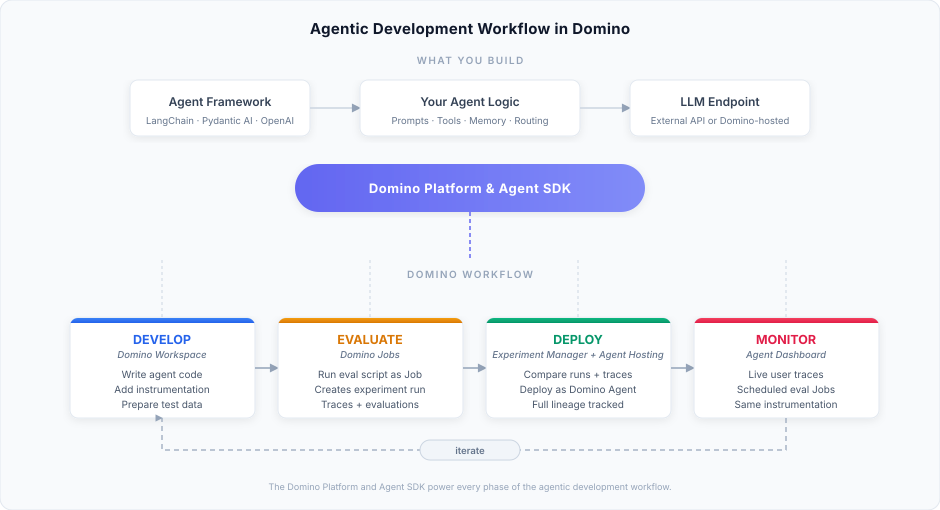

Build and evaluate agentic systems
Agentic systems orchestrate large language models (LLMs) with tools, APIs, and multi-step reasoning to accomplish complex tasks. These systems rely on LLM endpoints to process requests and generate responses. Register and deploy LLMs covers setting up the infrastructure your agents will use.
Experimenting with agentic systems is not the same as training traditional ML models. Instead of starting from scratch, you assemble systems that mix LLMs, prompts, tools, and agents. These systems are powerful but also complex, dynamic, and challenging to evaluate.
Develop — Instrument your code to capture traces during execution. Traces record every step your agentic system takes, including downstream calls, so you can debug, analyze, and explain results.
Experiment — Attach evaluations to traces to assess quality. Compare different configurations to see how prompts, agents, or models affect outcomes. Export results for analysis and sharing.
Deploy — Launch your best configuration to production. Domino continues collecting traces from real user interactions automatically.
Monitor — Track performance with production traces. Run evaluations continuously and iterate when you identify issues or opportunities for improvement.
These capabilities help you track experiments, evaluate results, and iterate with confidence. Traces, evaluations, and comparisons live inside your project, making it easy for colleagues to review, share, and extend your work.
An agentic system uses an LLM to plan, execute, and adapt across multiple steps. It's typically a framework — LangChain, Pydantic AI, OpenAI Agents SDK, or your own code — wrapping orchestration logic around LLM endpoints. Domino provides the infrastructure to instrument, evaluate, deploy, and monitor these systems with one consistent abstraction: traces.
Quick start. Clone a working example to see the full workflow in action:
- simple_domino_agent — Minimal agent with tool calls, tracing, evaluation, and deployment
- rag-agent-demo — RAG agent with ChromaDB, same Domino instrumentation patterns
How it works in Domino
A trace is a structured record of every LLM call, tool invocation, and decision your agent makes — with token usage, latency, and cost. One decorator (@add_tracing) instruments your code, and the same trace data flows through every phase:

- Develop in a Domino Workspace. Write your agent code using any framework, add
@add_tracingwith inline evaluators to instrument it, and prepare test data for your agent configuration. - Evaluate by running your evaluation script as a Domino Job. Each Job creates an experiment run in the Experiment Manager, capturing traces with evaluation scores for your agent configuration. Runs aggregate evaluation results across all traces.
- Compare and deploy in the Experiment Manager. Compare runs (different agent versions/configurations) and individual traces within runs. Deploy directly from any experiment run that originated from a Job — Domino tracks full lineage between dev and production (commit, agent config, and performance results).
- Monitor in production. The same
@add_tracinginstrumentation captures live user interactions as traces. Schedule evaluation Jobs to continuously score production traces and iterate when quality drops.
Your agents rely on LLM endpoints to process requests — see Register and deploy LLMs for setting up that infrastructure. For conceptual background on what makes a system agentic, see Agentic AI overview.